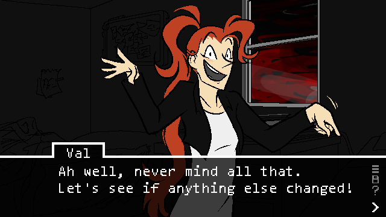
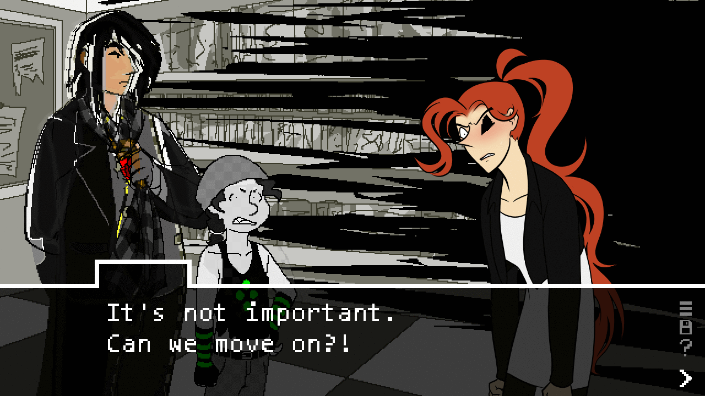
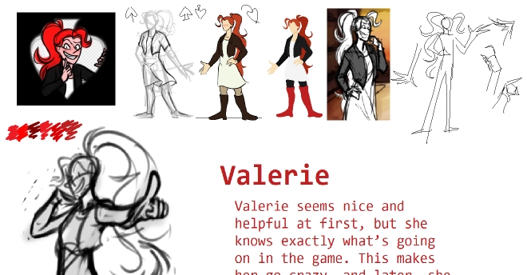

Hi! I’m Valerie (you can call me Val), resident gamewrecker. Trying to be less... game-wrecky this time around, though! I look like ^that, in the game sprites, and have also appeared like this:
...and like this.
Not my finest moment, that last one, but being secretive is so last week. Oh, and the concept art:
Aaaand that’s it! That’s pretty much all there is to me.
You know, I’d really love to show you some other events from the past few days, but giant text walls are no fun. I’m sure the others will fill in the blanks ;)